UDN
Search public documentation:
AnimSetEditorUserGuide
日本語訳
中国翻译
한국어
Interested in the Unreal Engine?
Visit the Unreal Technology site.
Looking for jobs and company info?
Check out the Epic games site.
Questions about support via UDN?
Contact the UDN Staff
中国翻译
한국어
Interested in the Unreal Engine?
Visit the Unreal Technology site.
Looking for jobs and company info?
Check out the Epic games site.
Questions about support via UDN?
Contact the UDN Staff
UE3 Home > Unreal Editor and Tools > AnimSet Editor User Guide
UE3 Home > Animation > AnimSet Editor User Guide
UE3 Home > Animators > AnimSet Editor User Guide
UE3 Home > Cinematic Artist > AnimSet Editor User Guide
UE3 Home > Animation > AnimSet Editor User Guide
UE3 Home > Animators > AnimSet Editor User Guide
UE3 Home > Cinematic Artist > AnimSet Editor User Guide
AnimSet Editor User Guide
Overview
Opening the AnimSet Editor
AnimSet Editor Interface
- Menu Bar
- Tool Bar
- Browser Pane - Mesh, Anim, and Morph tabs allow you to browser loaded skeletal meshes, animation sets and sequences, and morph target sets and sequences.
- Skeleton Tree Pane - A hierarchical tree view of the skeleton for the currently selected skeletal mesh in the Browser Pane.
- Properties Pane - Properties of the mesh, animation set, animation sequence, or morph target.
- Preview Pane - Previews the animation, simulations such as cloth, sockets, etc. on the currently selected skeletal mesh in the Browser Pane.
- Status Bar - Displays the name and information about the currently selected skeletal mesh (left) and animation sequence (right).
Menu Bar
File
- Import Mesh LOD... - Imports an LOD mesh for a particular LOD.
- New AnimSet - Creates a new, empty AnimSet.
- Import PSA - Imports animation sequences contained within a .PSA file into the currently selected AnimSet.
- Import COLLADA Animation - Imports animations contained within a COLLADA file into the currently selected AnimSet.
- New MorphTargetSet - Creates a new MorphTargetSet.
- Import MorphTarget - Imports a morph target (.PSK file) into the currently selected MorphTargetSet.
- Import MorphTarget LOD - Imports an LOD morph target for a particular LOD.
Edit
- Undo - Undo the last operation.
- Redo - Redo the last undone operation.
View
- Show Skeleton - Toggles display of the skeleton for the current skeletal mesh.
- Show Additive Base - Shows the Base Pose when viewing an Additive Animation
- Show Bone Names - Toggles display of the names of the bones in the skeleton for the current skeletal mesh in the Preview Pane.
- Show Reference Pose - Forces the mesh to be rendered in its default reference pose in the Preview Pane.
- Cycle Rendering Mode - Cycles between lit, wireframe and off (to make skeleton view easier)
- Show Mirror - This option shows the current animation mirrored on the mesh. You must have a valid mirroring table set up for this to work. More information on the AnimationMirroring page.
- Show Floor
- Show Grid - Toggles display of the grid in the Preview Pane.
- Show Sockets - Toggles display of any sockets on the current skeletal mesh in the Preview Pane.
- Show Bounds - Toggles dsisplay of the current skeletal mesh's bounds in the Preview Pane.
- Show Collision - Toggles display of the current skeletal mesh's collision geometry in the Preview Pane.
- Show Uncompressed Animation - Toggles previewing uncompressed animations in place of the compressed versions.
- Show Soft Body Tetra - Toggles display of the softbody tetrahedron mesh for the current skeletal mesh (in one has been generated) in the Preview Pane.
- Show Morph Keys - Toggles display of morph key weight information from animation data in the Preview Pane.
- Alt. Bone Weighting Edit - Allows you to view and edit alternate bone weights of selected bones Only enabled when alternate bone weight exists for current LOD.
- Show Tangent
- As Vector - Show tangent of each vertex of selected material section and you can select vertex to see information.
- As Texture - Map tangent vector to texture UV - helps to visualize direction of vectors.
- Show Normal
- As Vector - Show normal of each vertex of selected material section and you can select vertex to see information.
- As Texture - Map normal vector to texture UV - helps to visualize direction of vectors.
- Show Mirror - Toggles display of mirroring information for UV mapping.
- Show Material Section - Sets which material section is used for showing Tangents/Normals/Mirroring.
Mesh
- Set LOD Auto - Uses automatic LOD transitions depending on the size of the skeletal mesh on screen in the Preview Pane.
- Force LOD Base Mesh - Forces the Preview Pane to display the base LOD mesh of the skeletal mesh.
- Force LOD 1 - Forces the Preview Pane to display the LOD 1 mesh of the skeletal mesh. This will be disabled if no LOD 1 mesh exists.
- Force LOD 2 - Forces the Preview Pane to display the LOD 2 mesh of the skeletal mesh. This will be disabled if no LOD 2 mesh exists.
- Force LOD 3 - Forces the Preview Pane to display the LOD 3 mesh of the skeletal mesh. This will be disabled if no LOD 3 mesh exists.
- Generate An LOD - Automatically generates an LOD for the skeletal mesh. See SkeletalMeshSimplificationTool for details.
- Remove An LOD - Removes a particular LOD mesh from the skeletal mesh.
- Auto-build Mirror Table
- Check Mirror Table
- Copy Mirror Table to Clipboard - Copies the contents of the mirror table to the clipboard.
- Copy Mirror Table From Selected SkelMesh
- Update Bounds - Forces the bounds to be recalculated for the skeletal mesh.
- Copy Bones Names To Clipboard - Copies the names of all the bones in the skeletal mesh to the clipboard.
- Merge Mesh Materials
- Fixup Bone Names
- Socket Manager - Opens the Socket Manager for viewing, editing, adding, or removing sockets from the skeletal mesh.
AnimSet
- Reset AnimSet
- Delete Track - Deletes Bone Tracks from all Animations in current AnimSet
- Delete Morph Track - Deletes Morph Keys from all Animations in current AnimSet
AnimSequence
- Rename Sequence - Renames the currently selected animation sequence in the Browser Pane.
- Delete Sequence(s) - Deletes any animation sequences currently selected in the Browser Pane.
- Copy Sequence(s) to current or selected AnimSet - Copies the currently selected animation sequence(s) in the Browser Pane to the currently selected AnimSet in the Content Browser. If no AnimSet is selected in the Content Browser, this creates copies in the currently selected AnimSet in the Browser Pane with the specificed new names.
- Move Sequence(s) to selected AnimSet - Moves the currently selected animation sequences in the Browser Pane to the currently selected AnimSet in the Content Browser, removing them from their current AnimSet.
- Convert Sequence(s) to Additive Animation
| Reference Pose | Use the Bind Pose of the Mesh as the Base Pose |
| Animation First Frame | Use the First Frame of the selected Base Pose animation |
| Animation Scaled | Scale the selected Base Pose animation to the Target animation, if they have different length (default) |
| Looping Animation | This is to handle the last to first frame interpolation for looping animations. This is only relevant if the Target and Base animations have different lengths |
- Rebuild Additive Animation(s) -
- Add Additive Animation to selected Sequence(s) - Opens a dialog for selecting from the available additive animations to add to the currently selected animation sequence(s) in the Browser Pane.
- Subtract Additive Animation to selected Sequence(s) - Opens a dialog for selecting from the available additive animations to subtract from the currently selected animation sequence(s) in the Browser Pane.
- Copy Sequence Name to Clipboard - Copies the name of the last selected animation sequence in the Browser Pane to the clipboard.
- Copy Sequence Name List to Clipboard - Copies a list of the names of all the animation sequences in the currently selected AnimSet in the Browser Pane to the clipboard.
- Apply Rotation - Applies the specified rotation around the specified axis to the selected animation sequence(s) in the Browser Pane.
- ReZero On Current Position -
- Remove Before Current Position -
- Remove After Current Position -
Notifies
- New Notify - Adds a new animation notification.
- Copy Notifies - Copies the animation notifications from the current animation sequence to the specified destination animation sequence.
- Sort Notifies - Re-orders the animation notifications for the current animation sequence so they appear sequentially in the array.
- Shift Notifies - Shifts all animation notifications for the current sequence the specified amount of time.
- Enable All PSys Previews - Enables preview of any particle effect notifications in the Preview Pane.
- Disable All PSys Previews - Disables preview of any particle effect notifications in the Preview Pane.
MorphSet
- Update Morph Targets - Remap vertex buffer indices of morph target to base mesh. This should be automatic if you load it and indices change has been detected. This is still a premature feature, but this fixes when only base mesh's weight has been modified. This doesn't work if vertex ordering or position has been modified in Maya or 3ds Max.
MorphTarget
- Delete Morph Target - Deletes the selected morph target(s) in the Browser Pane.
Animation Compression
- Animation Compression... - Opens the Animation Compression dialog dialog.
Alt. Bone Weighting
- Import Mesh Weights... - Import Alternate Mesh Weights for use either as a FULL weight swap (high bone rig vs game bone rig) or PARTIAL (gore mesh).
- Toggle Mesh Weights... - Toggle Alternate Mesh Weights display on or off.
- Show All Mesh Vertices... - Show All Mesh Vertices when in alternate weight editing (in blue), as compared to just showing vertices weighted to the selected bones (red/white).
- Delete Bone Break Vert Weightings... - Delete/Reset Bone Break Vert Weightings using [Calculate Bone Break Vert Weightings]. Clears BreakBoneNames and related data.
Window
- Browser: - Shows Browser Pane.
- Properties: - Shows Properties Pane.
- Skeleton Tree - Shows the Skeleton Tree Pane.
Tool Bar
| Icon | Description |
|---|---|
| 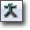 | Toggles display of the skeleton for the current skeletal mesh. |
| Shows the Base Pose when viewing an Additive Animation. | |
| 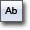 | This option toggles the display of the names of bones in the Preview Pane. |
| 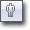 | Cycles between lit, wireframe and off (to make skeleton view easier). |
| This option forces the mesh to be rendered in its default reference pose in the Preview Pane. | |
| 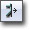 | This option shows the current animation mirrored on the mesh. You must have a valid mirroring table set up for this to work. More information on the AnimationMirroring page. |
| This option opens the Socket Manager. | |
| 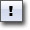 | This option allows you to add a new animation notification to the current animation sequence. Custom AnimNotify buttons can also be added. See Custom AnimNotify buttons for details. |
| 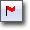 | This option toggles simulation of vertex cloth. |
| 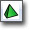 | This option generates a new softbody tetrahedron mesh using the current settings in Mesh properties. |
| 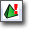 | This option toggles softbody preview simulation. |
| This options toggles previewing uncompressed animations in place of the compressed versions. | |
| Opens the Animation Compression dialog. | |
| 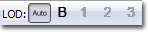 | This allows you to force a specific LOD mesh to be displayed or use automatic LOD transitioning based on the size of the mesh on the screen in the Preview Pane. |
| 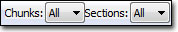 | Allows specific chunks or sections to be viewed in addition to viewing the entire skeletal mesh. See Viewing Chunks and Sections. |
| 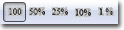 | Choose from Full Speed, 0.5 Speed, 0.25 Speed, 0.1 Speed, or 0.01 Speed. |
| 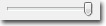 | Allows visualization of the triangle drawing order for translucent materials on the skeletal mesh. See TranslucentHairSorting. |
| View and edit alternate bone weights of selected bones. | |
| 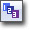 | See TranslucentHairSorting. |
 | Choose between editing left or right triangle draw order for TRISORT_CustomLeftRight. See TranslucentHairSorting. |
| 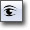 | This option toggles the Auto Re-import Animation feature. |
| 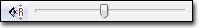 | This allow syou to set the field of view (FOV) of the camera in the Preview Pane. |
Browser Pane
Mesh Tab
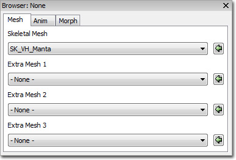- Skeletal Mesh - Sets the skeletal mesh to preview in the AnimSet Editor. Animations will be applied to this mesh.
- Extra Mesh (1-3) - Sets additional skeletal meshes to preview in the Preview Pane. No animations are applied to these meshes.
Anim Tab
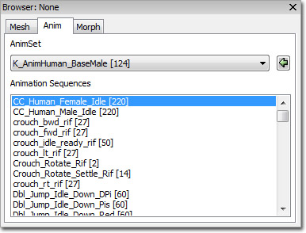- AnimSet - Choose the AnimSet with which to populate Animation Sequence list.
- Animation Sequences - Displays all animation sequences from the chosen AnimSet. Selected animation sequence is previewed in the Preview Pane.
Morph Tab
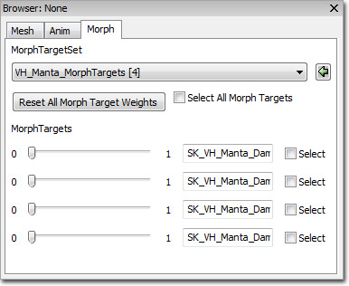- MorphTargetSet - Choose MorphtTargetSet with which to populate Morpht Targets list.
- MorphTargets - Displays all morph targets from the chosen MorphTargetSet. Weights can be modified to preview effects in preview Pane and names can be modified.
Skeleton Tree Pane
Under the Windows Menu, you will find an option to turn on the skeletal hierarchy. 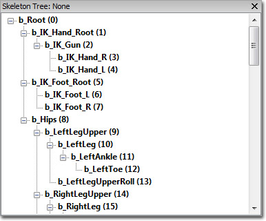 Here you can see the hierarchical makeup of the skeleton related to the selected mesh. Simply clicking on a bone will highlight the bone on the model and provide a widget to manipulate the bone. Pressing spacebar while in the viewport will alternate between the translation and rotation widgets. As you manipulate the widget, it will show you the movement delta from the current animation/skeletal pose. Clicking on another bone during manipulation will reset the previous bone. Bones listed in BOLD indicates that one or more vertices are weighted on that bone. 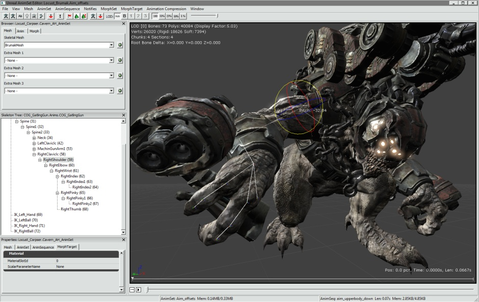 Right clicking on a bone will give you a pop-up menu of choices. 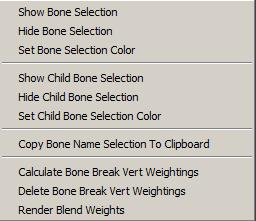 Here you can:- Show the selected bone
- Hide the selected bone
- Set a render color for the selected bone
- Show the selected bone's children
- Hide the selected bone's children
- Copy the entire bone hierarchy as text to the clipboard
- Calculate the bone influence breaks for alternate bone weights between this bone and its parent : This will be available during Alt. Bone Weighting Edit Mode.
- Delete/Reset the bone influence breaks for alternate bone weights for all bones: This will be available during Alt. Bone Weighting Edit Mode.
- Enable and disable vertex blend weight rendering
Alt. Bone Weighting Edit Mode (Bone Influence Editing)
The engine supports a notion of storing alternate bone weight / influence "tracks" per skeletal mesh. At runtime these tracks can be swapped per bone pair allowing a clean break from the main skeletal mesh. Each vertex influenced by the specified bone is swapped with a new set of bone weights on the alternate track. Possible effects include gore and gibbing by separating a limb from a character body. To set this up, artists first create multiple meshes in the DCT, one with the bone influences during normal movement and another with all appropriate limbs or mesh sections weighted differently to support separation from the main body. After the first mesh is imported, the alternate weight mesh is imported through Alt. Bone Weighting:Import Mesh Weights. Select desired LOD you'd like to import for. It will ask for the original mesh again of the LOD, followed by the new alternate mesh. It assumes and therefore requires that vertex indices match between the meshes. From this mesh it will store a new list of bone influences and their weights for the LOD. A prompt will ask whether or not this alternate weight track is for FULL or PARTIAL weight swapping. A full weight swap is just like it sounds. When the vertex weights are toggled on this LOD, every vertex bone weighting is swapped with the alternate track data. In addition, the RequiredBones array is updated on the model to tell the animation system that a different set of bones (subset or superset) are weighting the mesh. A partial weight swap works per bone to indicate vertices that will swap weighting when a particular joint is broken to facilitate gore type effects. Now that the mesh has an alternate influence track, if you've selected PARTIAL weighting, the bone breaks must be specified. First enable alternate bone weighting editing(bone influence editing) via the toolbar. Make sure you're in the right LOD to be able to select. The menu will be disabled if the current LOD does not have alternate bone weights. Also during editing mode, you wouldn't be able to change LOD. In the skeleton tree, click on all the bones where a break between it and its parent will occur. They can be selected one at a time, or via multi-select. Notice that red vertices will show up in the view for each bone selected. These represent all vertices influenced by the selected bone or its parent. 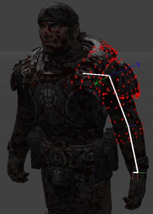 Right click and select "Calculate Bone Break Vert Weightings". If there are any vertices influenced by BOTH the selected bone and its parent, the vertex will turn white. 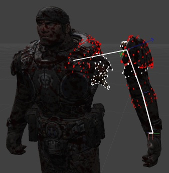 These white vertices will swap influence when that bone break occurs in game. Use the translation/rotation widget to see the results of the influence swap. Notice in the example above that the separation is complete, without any vertex stretching back to the main body. The algorithm for calculating the break is fairly simple, if some vertices are not found because they aren't weighted to both bones, they can still be added to the break manually. Simply double click a red vertex and it will turn white, adding itself to the list and removing the stretch. You can remove a vertex in the same fashion. Every time a break is made, the bone name is added to the SkeletalMesh's BoneBreakNames variable. This array is maintained across re-imports of the mesh and the break calculations will automatically be redone. This does NOT include any manual manipulation made the vertex list during last import. 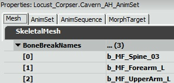Properties Pane
Mesh Properties
Skeletal Mesh Properties:- Materials - Array of material slots to assign materials to the mesh.
- Clothing Assets -
- Origin - Offsets the translation for themesh.
- Rot Origin - Offsets the rotation of the mesh.
- Skel Mirror Table -
- Skel Mirror Axis -
- Skel Mirror Flip Axis -
- Bone Break Names -
- Bone Break Options -
- LODInfo - List of LODs for this skeletal mesh. each LOD contains the following:
- Display Factor - Sets the size of the mesh on screen to begin using this LOD.
- LODHysteresis - A sort of fudge factor used to keep the mesh from flickering when transitioning from one LOD to another. Only used when going from complex to simple.
- LODMaterial Map - Material slots mapped to the base mesh's Materials array used to set or override the materials used on this LOD's mesh.
- Enable Shadow Casting - Per-section setting for whether to cast shadows or not.
- Triangle Sorting - Per-section triangle sorting methodto use.
- Per Poly Collision Bones - List of bones to use per poly collision for polys they influence.
- Add To Parent Per Poly collision Bone - List of bones to find its parent bone in the Per Poly Collision Bones and add the child's polys to the parent.
- Per Poly Use Soft Weighting - If true, include any triangles that are soft weighted to the bones used for per poly collision.
- Force CPUSkinning - If true, forces skinning to be performed on the CPU. Necessary for using cloth simulation.
- Use Full Precision UVs - If true, use full precision (16-bit) UVs instead of the standard half-precision (8-bit) UVs.
- Use Packed Position - If true, use compressed position XTZs (4 bytes saving 8 bytes). Only useful when using GPU skinning.
- FaceFX Asset - Sets the FaceFX asset used by this skeletal mesh when playing facial animations.
- Bounds Preview Asset - Sets the asset used for previewing bounds in the Preview Pane. Can improve reliability when setting up LOD distance factors.
- Preview Morph Sets - Asset used for previewing morph targets in the Preview Pane. Only used in the editor.
- LODBias PC - LOD bias used for PC. This is the highest LOD (most detailed) that will be used.
- LODBias PS3 - LOD bias used for PS3. This is the highest LOD (most detailed) that will be used.
- Source File Path - Shows the file system path the asset was imported from.
- Source File Timestamp - Shows the time of the source file.
- Cloth Movement Scale Gen Mode -Sets the method to use to generate the ClothMovementScale table.
- ECMDM_DistToFixedVert -
- ECMDM_VertexBoneWieght -
- ECMDM_Empty -
- Cloth To AnimMesh Max Dist - Sets the maximum distance a simulated cloth vertex can move from it's animated position.
- Limit Cloth To Anim Mesh - If true, cloth vertices will be limited to how far they can move from their animated positions.
- Cloth Bones - Array of bone names whose vertices will be simulated using the cloth physics simulation.
- Cloth Hierarchy Levels - If greater than 0, the cloth simulation will internally subdivide the cloth into smaller meshes to improve simulation time and reduce stretching. This value is how many times the cloth is subdivided.
- Enable Cloth Bend Constraints - If true, constraints will be applied to the cloth to attempt to minimize curvature or folding.
- Enable Cloth Damping - If true, damping will be applied to the cloth.
- Use Cloth COMDamping - If true, cloth internal velocities will have center of mass damping applied.
- Cloth Stretch Stiffness - Sets the strength of the springs used to keep particles in the cloth together.
- Cloth Bend Stiffness - Sets the strength of the springs used to stop the cloth from bending or folding. Requires Enable Cloth Bend Constraints to be true.
- Cloth Density - This value is multiplied by the size of the triangles sharing a point to calculate the point's mass. This value cannot be modified after the cloth has been created.
- Cloth Thickness - Sets how thick the cloth is considered to be when calculating collisions.
- Cloth Damping - Sets the amount of damping force applied to the cloth particles. Requires Enable Cloth Damping to be true.
- Cloth Iterations - Sets the number of solver iterations performed by the cloth simulation. Higher values can improve the quality of the simulation with the drawback of being more expensive to calculate.
- Cloth Hierarchy Iterations - If using cloth hierarchy subdivisions, this value determines how many solver iterations each sub-mesh will perform.
- Cloth Friction - Sets the friction coefficient of the cloth; used to control movement of cloth when in contact with other bodies.
- Hard Stretch Limit Factor -Sets the amount of stretching allowed in the cloth. A value of 1.0 means no stretching, but will cause jittering. Requires Hard Stretch Limit to be true.
- Hard Stretch Limit - If true, the amount of stretching allowed by the cloth simulation will be limited. Requires Limit Cloth To Anim Mesh to be true.
- Enable Cloth Line Checks - If true, line checks are performed with a raycast against the cloth, but point and swept extent checks are performed against the cloth AABB.
- Enable Cloth Tearing - If true, the cloth can be torn along edges between vertices. This requires extra vertices/indices to be reserved using the Cloth Tear Reserve property. Note: Tearing is disabled when welding is being used.
- Cloth Tear Factor - Sets the amount of stretching that can occur before the cloth will tear when tearing is enabled.
- Cloth Tear Reserve - Sets the number of vertices/indices that are set aside to accomodate new triangles created from cloth tearing.
- Enable Valid Bounds - If true, any cloth vertex that exceedes its valid bounds will be deleted.
- Valid Bounds Min - Sets the minimum extent of the valid bounds.
- Valid Bounds Max - Sets the maximum extent of the valid bounds.
- Force No Welding - If true, welding will be disabled even if the mesh has doubled vertices.
- Cloth Relative Grid Spacing - Sets the size of the grid cells the cloth is divided into when performing broadphase collision. The cell size is relative to the AABB of the cloth.
- Cloth Pressure - Sets the internal "air" pressure of the cloth. Requires Enable Cloth Pressure to be true.
- Cloth Collision Repsonse Coefficient - Sets the response coefficient for cloth/rigid body collision.
- Cloth Attachment Response Coefficient - Sets the amount of influence an attachment to a rigid body can have on the cloth.
- Cloth Attachment Tear Factor - Sets the amount of extension an attachment can undergo before it tears/breaks.
- Cloth Sleep Linear Velocity - Sets the maximum linear velocity at which cloth can be put to sleep. If the value is negative, the global default will be used.
- Enable Cloth Ortho Bend Constraints - If true, angular springs constraints will be used to minimize cloth bending or folding. This is slower than the distance springs used with the Enable Cloth Bend Constraints, but is independent of stretching resistance.
- Enable Cloth Self Collision - If true, the cloth will collide with itself.
- Enable Cloth Pressure - If true, pressure will be enabled for the cloth. This allows simulation of inflatable objects.
- Enable Cloth Two Way Collision - If true, two-way collisions with rigid bodies will be enabled.
- Cloth Special Bones -List of bones whose vertices are considered sloth with special behavior. This currently means they will be attached tot eh physics asset with fixed or breakable attachements or tearlines.
- Cloth Metal - If true, the cloth simulation will be wrapped inside a rigid body and only used upon impact, allowing you to simulate metal-like surfaces.
- Cloth Metal Impulse Threshold - Sets the threshold for when deformation should occur.
- Cloth Metal Penetration Depth - Sets the amount by which colliding objects are brought closer to the cloth.
- Cloth Metal Max Deformation Distance - Sets the maximum deviation of cloth particles from their initial position.
- Soft Body Bones - List of bones whose vertices should be included in the soft-body simulation.
- Soft Body Special Bones - List of bones whose vertices should be considered part of the soft-body simulation with special behavior. This currently means they are attached to the physics asset with fixed or breakable attachments.
- Soft Body Volume Stiffness - Sets how strongly the soft-body resists motion that changes the rest volume. This can be a value in the range of 0 to 1.
- Soft Body Stretching Stiffness - Sets how strongly the soft-body resists stretching motions. This can be a value in the range of 0 to 1.
- Soft Body Density - Sets the density of the soft-body.
- Soft Body Particle Radius - Sets the size of the soft-body particles used for collision detection.
- Soft Body Damping - Sets the amount of damping force applied to the soft-body particles. Requires Enable Soft Body Damping to be true.
- Soft Body Solver Iterations - Sets the number of solver iterations performed by the soft-body simulation. Higher values will result in a higher quality simulation at the expense of slower calculations.
- Soft Body Friction - Sets the friction coefficient of the soft-body; used to control movement of soft-body when in contact with other bodies.
- Soft Body Relative Grid Spacing - Sets the size of the grid cells the soft-body is divided into when performing broadphase collision. This is relative to the AABB of the soft-body.
- Soft Body Sleep Linear Velocity - Sets the maximum linear velocity at which the soft-body can be put the sleep. A negative value results in the global default being used.
- Enable Soft Body Self Collision - If true, the soft-body will collide with itself.
- Soft Body Attachment Response - Sets the factor for the impulse transfer from the soft-body to attached rigid bodies. Requires Enable Soft Body Two Way Collision to be true.
- Soft Body Collision Response -Sets the factor for the impulse transfer from the soft-body to colliding rigid bodies. Rquires Enable Soft Body Two Way Collision to be true.
- Soft Body Detail Level - Sets the amount by which the original graphics mesh is simplified before it is used to seed the tetrahedron-mesh generator.
- Soft Body Subdivision Level - Sets the number of tetrahedra that are created to approximate the surface-mesh.
- Soft Body Iso Surface - If true, an iso-surface mesh is generated around the original graphics mesh before the tetrahedron-mesh is created.
- Enable Soft Body Damping - If true, damping forces are applied to the soft-body.
- Use Soft Body COMDamping - If true, soft-body internal velocities will have center of mass damping applied.
- Soft Body Attachment Threshold - Sets the maximum distance a tetra-vertex is allowed to move from the surface-mesh to still end up attached to a bone.
- Enable Soft Body Two Way Collision - If true, two-way collision with rigid bodies is enabled.
- Soft Body Attachment Tear Factor - Sets the amount of extension an attachment can undergo before it tears/breaks.
- Enable Soft Body Line Checks - If true, line checks are performed with a raycast against the soft-body, but point and swept extent checks are performed against the soft-body AABB.
Anim Set Properties
Anim Set Properties:- Anim Rotation Only - If true, only rotation animation for the animations in the AnimSet will be used, ignoring any translation of bones except those in the Use Translation Bone Names array.
- UseTranslationBoneNames - List of bones to take translation animation data into account for when Anim Rotation Only is true.
- Force Mesh Translation Bone Names - List of bones which will always use their translation from the mesh and not from the current animation.
Anim Sequence Properties
Anim Sequence Properties:- Notifies - A notify is an event that is fired at a specific time on an AnimSequence. There are a few available:
- AnimNotify_Sound - Triggers a SoundCue
- AnimNotify_Footstep - Calls the event PlayFootStepSound() in your Pawn class that is playing this AnimSequence
- AnimNotify_Script
- AnimNotify_PlayFaceFXAnim - Triggers a FaceFX animation to play.
- AnimNotify_ViewShake
- AnimNotify_PlayParticleEffect - Triggers a particle effect to play.
- AnimNotify_CameraEffect - Triggers a camera effect to play.
- AnimNotify_Rumble -
- Rate Scale - Scales the playback speed of the animation sequence.
- No Looping Interpolation - If true, disables any interpolation between the last frame and the first frame when looping.
- Do Not Override Compression - If true, do not attempt to override the compression scheme when running the Compress Animations commandlet. This is useful for certain high-frequency animations that are too sensitive to be changed.
- Compression Scheme - Shows the compression scheme most recently used on the animation sequence.
Morph Target Properties
Material Properties:- Material Slot ID - Sets the material slot ID on the skeletal mesh for this morph target to use when driving a material parameter.
- Scalar Parameter Name - Sets the name of the scalar parameter for this morph target to drive.
Mesh Simplification
The settings used to simplify an LOD of the skeletal mesh. See SkeletalMeshSimplificationTool for details.Controls
Mouse Controls
- LMB + Drag - Rotates the camera (orbit) around the mesh
- RMB + Drag - Moves the camera along its local X-axis, zooming the camera in or out.
- MMB + Drag - Moves the camera along its local YZ-plane.
Keyboard Controls
- L + Mouse Move - Rotates the preview light in the Preview Pane.
- W + Mouse Move - Rotates the wind direction used for previewing cloth in the Preview Pane.
- W + RMB + Mouse Move - Adjusts the strength of the wind used to preview cloth in the Preview Pane.
Hot Keys
- Spacebar - Toggle between translation and rotation while operating on bones and sockets in the socket manager
Auto Re-import Animation
- Add the folder you want the editor to listen, i.e. UnrealEngine3\Temp
- Enable it for the viewer you would like it to activate
- Default behavior
- Can't find track, it will try to match it.
- Do not accept extra tracks
- Overwrites same animations
- Imports all animations in the given PSA
- Rebuilt additive animation
- Any error message on importing should show in Log window
- Make sure you do not have multiple AnimSet Viewer with listening option. It will try to reimport.
- Watch out for the log window. If anything fails or success, it will print to the log window.
Viewing Chunks and Sections
Individual chunks and sections can be viewed in the Preview Pane using the controls in the toolbar. This makes it easy to focus on a specific part of the mesh without the rest taking of the view When the Chunks and Sections dropdowns are set to the entier mesh is displayed in the Preview Pane: Changing the Chunks dropdown to causes only chunk 0 to be displayed: 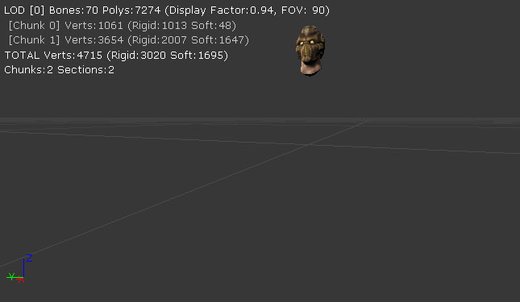 Similarly, changing the Sections dropdown to causes only section 1 to be displayed: 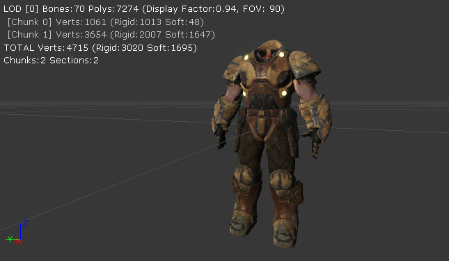Custom AnimNotify Buttons
Buttons can be added to the toolbar to create a specific class of AnimNotify with preset property values instead of the empty notify container created by the standard toolbar button. Up to three custom buttons can be specified, and the tool tip will show what each button is bound to. 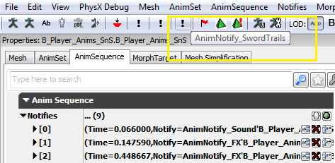 Clicking the button now will create the notify with the notify object (from defined class or achetype), with the option to set a duration, and/or a fixed start time. 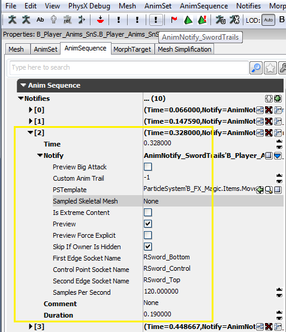 These custom buttons are driven by config variables set inEditor.ini under [AnimSetViewer] that specify data to use, such as notify class or archetype.
Example ini setup:
[AnimSetViewer] ;To define a custom notify button assign a notify class like Engine.AnimNotify_FootStep or SwordGame.AnimNotify_FX ;or use an archetype like E_AnimNotify.FootStep_Left (assuming E_AnimNotify is a package) AnimNotifyCustom0=B_Player_Anims.Notifies.AnimTrail_Left ;The custom notify button can be further modified with a duration, if negative the start will be pulled back and the end put at cursor point. AnimNotifyCustom0Duration=1.0 ;Can also specify a fixed start time, will set the notify at this time, no need to drag to the desired point. AnimNotifyCustom0FixedStart=0.45